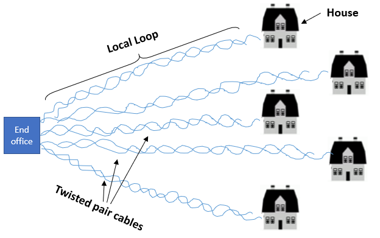

We will be covering three examples of communication systems:
The base station relays incoming and outgoing messages to and from your mobile.
Mobile phones use radio communication to send and receive information.
There have been 4 generations of mobile phone systems over the last 40 years (1G, 2G, 3G, 4G).
These are what we call digital cellular networks (hence the diagram above, and the name cell-phone)
| Name | Year | Description |
|---|---|---|
| 1G | 1981 | Analog voice |
| 2G | 1992 | Digital voice |
| 3G | 2001 | Digital voice + Digital data |
| 4G | 2011 | Digital voice + More digital data |
| 5G | ? | n/a |
The dominant technology in 2G was the Global System for Mobile communications (GSM)
GSM was the first technology to make use of the SIM card.
Figure 2.9a
Figure 2.9a shows the GSM mobile network architecture. There are a lot of scary looking acronyms and funny shapes, but I'll try and break it down.
DSL is a common technology for bringing broadband connection to homes by reusing existing telephone infrastructure.
Figure 2.9b
As you can in see in Figure 2.9b above, twisted pair cables are used in the 'Local Loop'. The local loop is just the link between a house and the end office.
The Local Loop uses frequencies that are not used for the voice band (0 - 3kHz). This is a concept known as 'Passband Modulation'.
The local loop means we get a constant speed, since the bandwidth is dedicated for each customer (more secure).
Figure 2.9c
In Figure 2.9c above, voice signals do not need much kHz.
A slightly larger, but still relatively small consumer of kHz is uploading (aka. Upstream).
The biggest consumer of the kHz is the downloading (aka. Downstream).
Why is this? Because on average we download a lot more than we upload.
Unfortunately twisted pair cables have their limitations - they are distance-sensitive meaning signals will degrade :(
Due to this limitation, the speed of DSL depends on your location.
IOC is another common technology for bringing broadband connection to homes by reusing the existing cable TV infrastructure.
The bandwidth is shared over customers. This is the opposite of what it was in DSL, where each customer had their own local loop and thus their own bandwidth.
If you see the diagram for IOC it will make sense how the bandwidth is shared.
Figure 2.9d
Since the bandwidth is shared across customers, the data rate depends on the number of people online.
But in general, IOC is faster than DSL... Why?
Also there is a security issue with IOC because the link is shared between all the customers.
Just like with DSL, Upstream and downstream data are allocated to frequency channels not used by TV channels.
Figure 2.9e
Like with DSL, voice signals do not need much MHz.
Slightly smaller is FM radio.
Slightly larger is downloading (aka. Upstream).
What you might think is the largest is downloading (aka. Downstream).
The biggest consumer of the MHz is in fact TV.
So in summary, the main difference between DSL and IOC (apart from them being used for two differnet reasons - TV and Broadband) are:
| Advantages | Disadvantages | |
|---|---|---|
| DSL | More secure | Lower data-rate |
| IOC | Higher data-rate | Less secure |